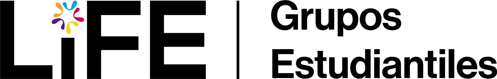

Grupo
Estudiantil
Etiqueta del evento
Título del
evento aquí
Una línea que explique qué es y a quién le sirve.
📅
Jueves 14 de agosto
🕒
17:00 h
📍
Aula Magna, Aulas IV
Regístrate · bit.ly/enlace

@handle_del_grupo
Dudas: contacto@grupo